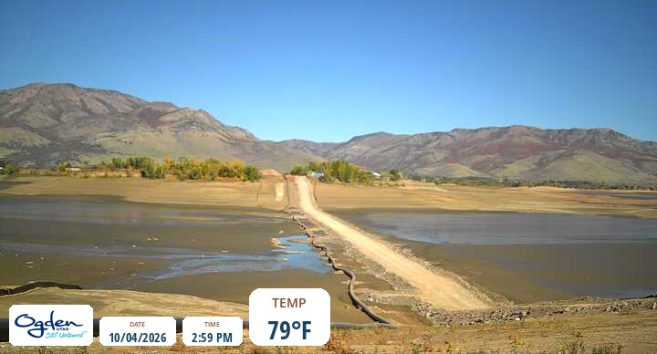

📷 Construction Site Camera
Pineview Reservoir Pipeline Crossing — live photo feed and a rolling 10-hour timelapse from the job site.
Pineview Crossing

Still photos: no permission needed — please credit “Courtesy of Ogden City Engineering.”
Tip: click the photo to view it full screen.
Loading feed status…
Camera captures every 5 minutes · SPYPOINT Flex-S-Dark
Still photos: may be used in broadcast or online media without an email request, provided they are credited — "Courtesy of Ogden City Engineering." The full-screen view is intended for control rooms and on-air display. The timelapse is a rolling 12-second loop of the last 10 hours, rebuilt about every 30 minutes — it is not live video.